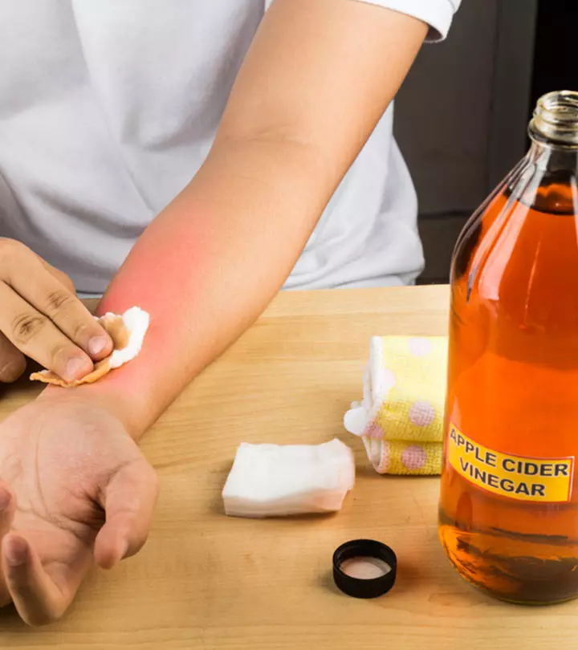

The Healing Power of Vinegar: A Natural Remedy for Burns
Introduction
Burns can be painful and distressing, but did you know that a common kitchen ingredient might offer a quick and natural solution? Vinegar, often used in cooking and cleaning, has been touted for its healing properties when it comes to minor burns. In this article, we'll explore how vinegar can help soothe burns and speed up the healing process.
The Science Behind Vinegar's Healing Properties
Vinegar, particularly apple cider vinegar, is rich in acetic acid, which has been known for its antibacterial and anti-inflammatory properties. These properties make vinegar a potential home remedy for minor burns by:
- Reducing Pain and Inflammation: The acetic acid in vinegar can help reduce the pain and swelling associated with burns.
- Preventing Infection: Vinegar's antibacterial properties can help prevent infection in burn wounds.
- Balancing Skin pH: Applying vinegar can help balance the skin's pH, promoting faster healing.
How to Use Vinegar for Burns
If you've suffered a minor burn, follow these steps to use vinegar as a remedy:
- Cool the Burn: Immediately run the burn under cool (not cold) water for 10-15 minutes to cool the skin.
- Apply Vinegar: Dilute equal parts of water and apple cider vinegar. Soak a clean cloth in the solution and gently apply it to the burn.
- Reapply as Needed: Reapply the vinegar compress every few hours to help relieve pain and speed up healing.
Precautions and Considerations
- For Minor Burns Only: Vinegar should only be used for minor, first-degree burns. Severe burns require professional medical treatment.
- Patch Test: Before applying vinegar to a burn, do a patch test on an unaffected area of skin to ensure there is no adverse reaction.
- Consult a Doctor: If you experience severe pain, blistering, or signs of infection, seek medical attention immediately.
Summary
While vinegar can be a helpful home remedy for minor burns, it's important to use it with caution. Its natural antibacterial and anti-inflammatory properties make it an appealing option for those seeking an alternative to over-the-counter treatments. However, always remember to prioritize safety and seek medical advice for serious injuries.